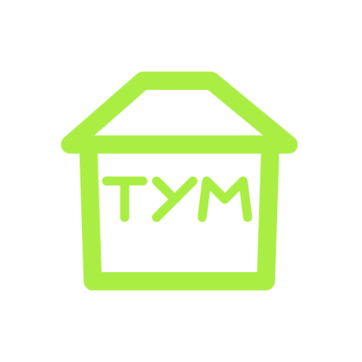
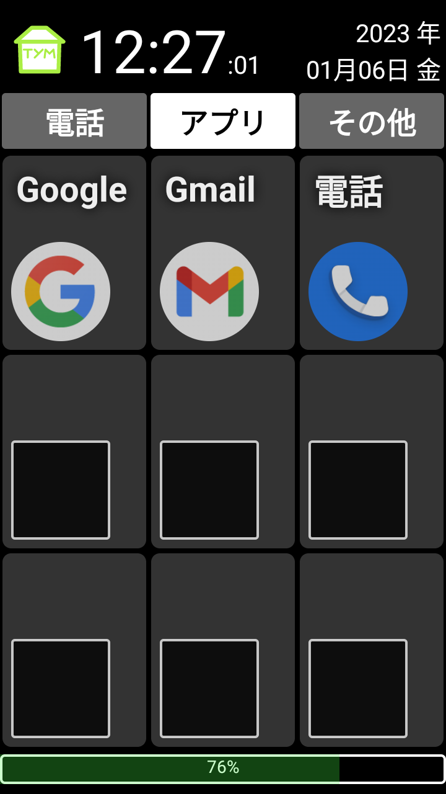
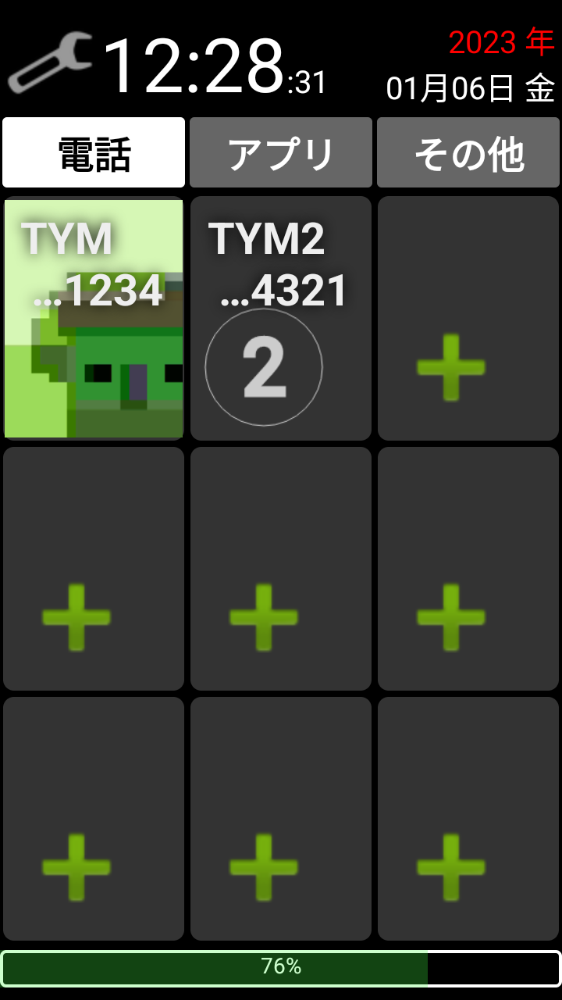
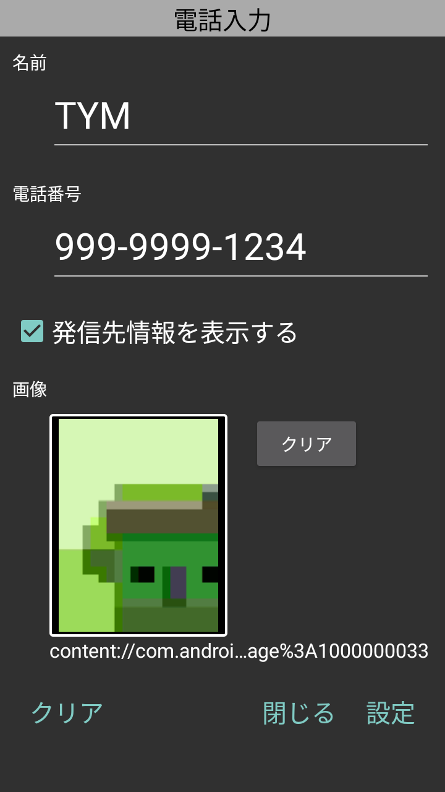

アプリ名
ＴＹＭホーム
簡単な説明
シンプルで出来ることが少ないホームアプリです。
更新の内容
2022.12.26 (12, 1.2.1)
- 写真を利用した場合の使用メモリを削減しました。
- 写真を縮小保存するようにし，表示性能を改善しました。
- 写真表示を３倍拡大後，縮小出来るようにしました。
- 写真表示３倍拡大時のスクロール動作を修正しました。
2022.12.20 (11, 1.1.1)
- タッチアクション(フラッシュ)を追加しました。
- 写真表示を３倍拡大で表示できるようにしました。
- 電話タブの項目ごとに写真が設定されていない時のデザインを変更しました。
- その他，軽微な修正を行いました。
2022.12.07 (10, 1.0.1)
詳しい説明
【シンプルで出来ることが少ないホームアプリ】
シニアの方に対して，出来ることを絞った状態でスマートフォンを利用しもらえるようにしました。
３つのタブと，タブごとに９つの項目しかありません。
設定は，シニアの方に渡される人だけが行えるように，少し特殊な操作が必要にしてあります。
スマートフォンの縦向きで利用することを想定しています。
【電話タブ】
- ９件の電話番号を登録できます。
- 項目には名前と電話番号の下４桁を表示します。
- 項目をタップすると電話がかかります。
- アプリの権限（電話）がない場合は，電話アプリが起動します。
- アプリの権限（電話）がある場合は，すぐに発信します。
- 項目をタップしたときに，発信先の情報を表示します。
- 項目ごとに写真を設定できます。
- Android 7.1 で電話の発信ができない問題が確認されています。
【アプリタブ】
- ９件のアプリを登録できます。
- 項目にはアプリ名とアプリアイコンを表示します。
- 項目をタップするとアプリが起動します。
【その他タブ】
- ９件の項目を登録できます。
- 項目は，次の種類があります。
-- アプリケーション
-- カメラ
-- ビデオ
-- 写真表示
-- TYM ホーム 権限設定
-- 簡易ゲーム(*1)
- アプリ，カメラ，ビデオ：項目をタップするとアプリ，カメラ，ビデオが起動します。
- 写真表示：タップすると拡大表示します。拡大表示をさらに３倍表示できます。
- TYM ホーム 権限設定：アプリ情報を表示し，権限を変更できます。
Android設定画面からもアプリの権限の変更ができます。
*1 今後サポート予定
【設定モード】
- 画面の "年" の部分を５回タップします。 => "年" が赤くなります。
- 左上の TYMアイコン をクリックすると スパナアイコン に変わり設定モードになります。
- スパナアイコン をタップすると，元に戻ります。
- 各項目をタップすると，設定画面が表示されます。
【設定モード - 電話タブ - 電話入力画面】
- 名前と電話番号を入力して "設定" をタップすると設定されます。
- "クリア" をタップすると設定内容を消します。
- "閉じる" をタップすると設定内容は変更されません。
【設定モード - アプリタブ - アプリケーション選択】
- 一覧に表示されたアプリをタップすると設定されます。
- "クリア" をタップすると設定内容を消します。
- "閉じる" をタップすると設定内容は変更されません。
【設定モード - その他タブ - その他】
- 種類 を選択し，必要に応じてデータを選択し，"設定" をタップすると設定されます。
- アプリケーションの場合は，データ（アプリ）を設定してください。
- 写真表示の場合，データ（写真）を設定してください。
データ（写真）を設定すると設定された写真を表示します。
- "クリア" をタップすると設定内容を消します。
- "閉じる" をタップすると設定内容は変更されません。
アプリのアイコン
※アプリアイコンは、透過 PNG または JPEG で、1 MB 以下、512 x 512 ピクセルであり、
Google の デザイン仕様と メタデータに関するポリシーを遵守する必要があります。

フィーチャー グラフィック
※フィーチャー グラフィックは、PNG または JPEG で、15 MB 以下、1,024 x 500 ピクセルである必要があります。
携帯電話版のスクリーンショット
※スマートフォンのスクリーンショットを 2～8 枚アップロードしてください。
スクリーンショットは、PNG または JPEG で、それぞれ 8 MB 以下、
アスペクト比 16:9 または 9:16 で、縦横がそれぞれ 320～3,840 ピクセルである必要があります。
プロモーションの対象となるには、縦横がそれぞれ 1,080 ピクセル以上のスクリーンショットを
4 枚以上アップロードしてください。



7 インチ タブレット版のスクリーンショット
※ ・・・
10 インチ タブレット版のスクリーンショット
※ ・・・